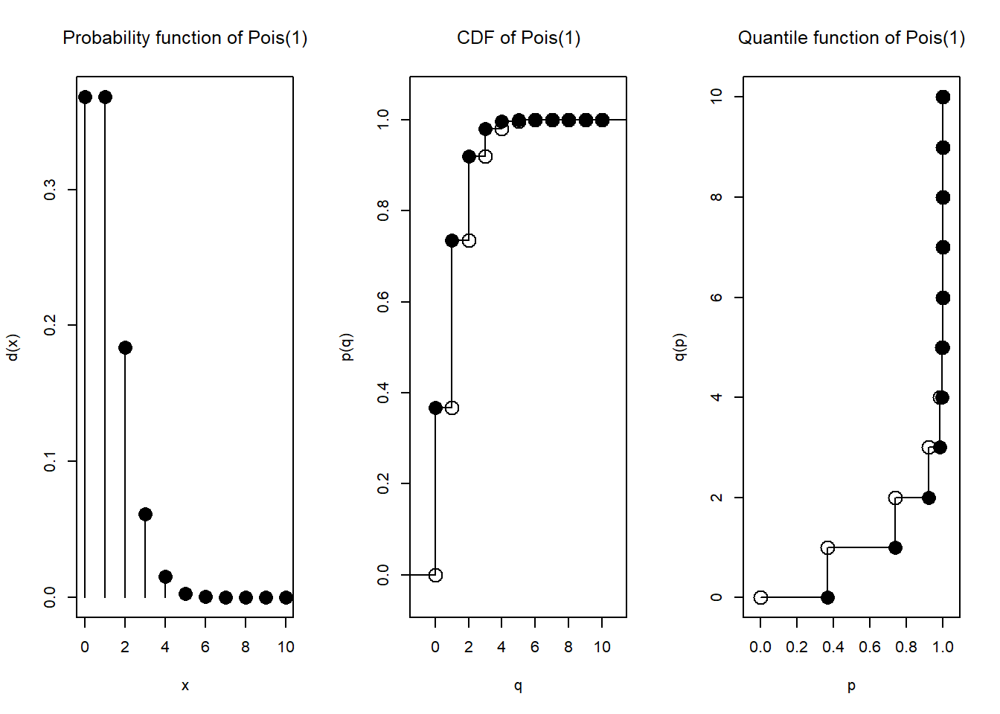
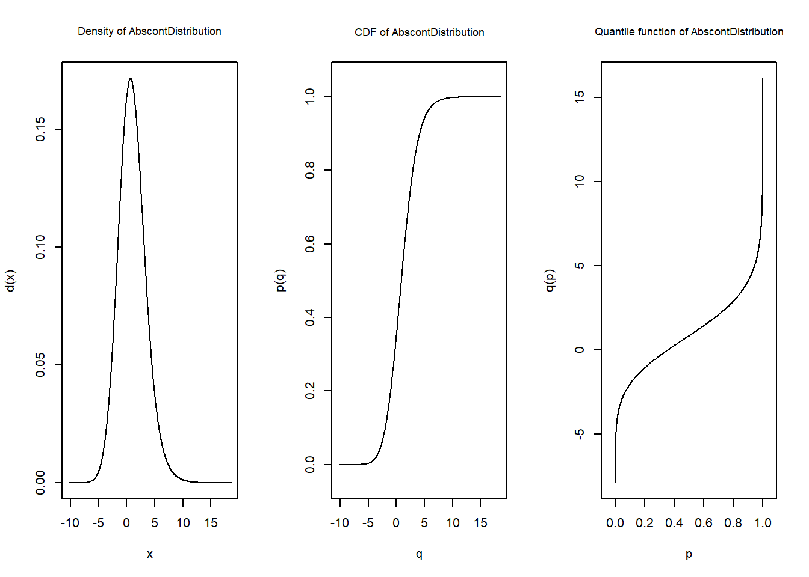
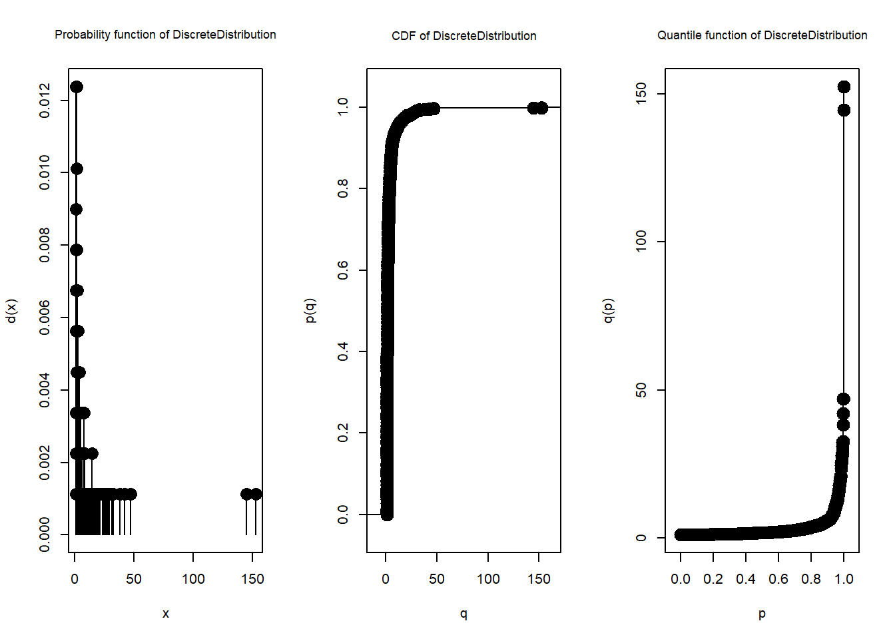
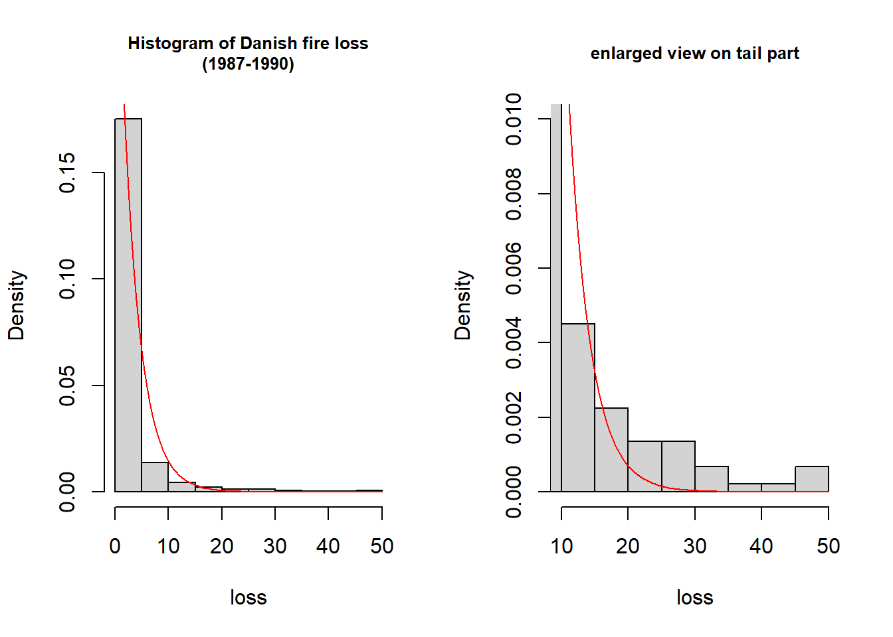

# R標準の関数の例
rnorm(5, mean = 0, sd = 1)[1] -0.5733372 0.2626607 -0.8457489 1.3673584 -0.8515542pnorm(1.64, mean = 0, sd = 1)[1] 0.9494974distrは、RのS4クラスという機能の下で実装された、確率分布の柔軟な扱いを可能にするパッケージです。
確率分布を扱うための機能として、R標準では特定の確率分布に対して「prefix」+「name」を名前とする関数が用意されています。prefixは以下の4種類で、例えば正規分布に従う乱数を取得するには、当該機能のprefixである「r」と正規分布を示す「norm」を組み合わせた名前の関数「rnorm」を使用します。
| Prefix | Function |
|---|---|
| r | 乱数の生成 |
| d | 確率密度関数 |
| p | 累積分布関数 |
| q | 分位点関数 |
# R標準の関数の例
rnorm(5, mean = 0, sd = 1)[1] -0.5733372 0.2626607 -0.8457489 1.3673584 -0.8515542pnorm(1.64, mean = 0, sd = 1)[1] 0.9494974これに対してdistrでは、まずは対象の確率分布に従う確率変数を生成し、この確率変数を通じて確率分布を取り扱います。distrの確率変数を操作する関数として、例えば 表 25.1 のprefixに示した4種類のアルファベット1文字を関数名とする、R標準と同様の機能を持つ4種類の関数（r、d、p、q）が用意されています。
以下のコードは確率変数を生成し、当該確率変数を引数としてp関数を呼び出すことで、累積分布関数の値を取得しています。
library(distr)
X <- Norm(mean = 0, sd = 1) # 標準正規分布に従う確率変数の生成
p(X)(1.96) # 生成した確率変数を引数としてp関数を呼び出す[1] 0.9750021このようなシンプルな例では、distrの方式はR標準のものと比べて冗長に見えますが、本稿で紹介していくように、より複雑な確率分布を直感的な記述で取り扱うことができる特長があります。例えば、異なる確率分布に従う二つの確率変数X、Yを生成し、X+3Yに対してq関数を呼び出す、といった操作も可能です。
distrの実装のベースとなっている「S4クラス」は、Rにおけるオブジェクト指向プログラミングをサポートする機能の一つです。上の例では、確率変数XはNormクラスのオブジェクトということになります。また、本稿で紹介する多くの関数や演算子が、確率分布（クラス）の種類を判別して適切に動作するよう、S4クラスの総称関数／ディスパッチの機能を利用しています。S4クラスそのものの解説は本稿の範疇を超えますが、Rにおけるこれらのトピックの参考資料として、例えば[2]があります。
ここではdistrの基本的な使用例として、確率変数の簡単な操作を行います。
distroptions("WarningArith" = FALSE) # 使用例上は警告文を非表示にします
set.seed(1234)確率変数の生成は、確率分布ごとに用意された生成用の関数（コンストラクタ）により行います。 確率分布ごとに必要なパラメータが異なるので、適切なパラメータを渡します。
以下はポアソン分布に従う確率変数N及び正規分布に従う確率変数Xを生成しています。
N <- Pois(lambda = 1)
X <- Norm(mean = 0, sd = 1)前述したように、NとXはそれぞれの確率分布に対応したS4クラスのオブジェクトです。 すなわち、生成した確率変数は、変数自身がクラス名などの情報や、内部変数（S4クラスでは「スロット」という）を保持しています。 str関数を使用すると、クラス名やスロットを表示することができます。 確率変数Xにstrを適用すると、生成時に指定したパラメータがparamというスロットに保持されていることが確認できます。
str(X)Formal class 'Norm' [package "distr"] with 12 slots
..@ gaps : NULL
..@ img :Formal class 'Reals' [package "distr"] with 2 slots
.. .. ..@ dimension: num 1
.. .. ..@ name : chr "Real Space"
..@ param :Formal class 'UniNormParameter' [package "distr"] with 3 slots
.. .. ..@ mean: num 0
.. .. ..@ sd : num 1
.. .. ..@ name: chr "Parameter of a Normal distribution"
..@ r :function (n)
..@ d :function (x, log = FALSE)
..@ p :function (q, lower.tail = TRUE, log.p = FALSE)
..@ q :function (p, lower.tail = TRUE, log.p = FALSE)
..@ .withSim : logi FALSE
..@ .withArith : logi FALSE
..@ .logExact : logi TRUE
..@ .lowerExact: logi TRUE
..@ Symmetry :Formal class 'SphericalSymmetry' [package "distr"] with 2 slots
.. .. ..@ type : chr "spherically symmetric distribution"
.. .. ..@ SymmCenter: num 0S4クラスのスロットは@を使って直接参照できますが、R標準やdistrに必要なスロットを参照するための関数が用意されているため、基本的には@を使った直接の参照は行いません。
例えばクラス名やパラメータの参照には、getClassやparam関数が使用できます。
getClass(X)Distribution Object of Class: Norm
mean: 0
sd: 1X@param # (参考)直接参照An object of class "UniNormParameter"
Slot "mean":
[1] 0
Slot "sd":
[1] 1
Slot "name":
[1] "Parameter of a Normal distribution"ポアソン分布に従う確率変数Nに対して、基本的な4つの関数（r、d、p、q）を適用して結果を確認してみましょう。
この4関数は、やや特殊に見えるかもしれませんが、[関数名] ([確率変数]) ([引数])の形式で呼び出します。 なお、RStudioではq()がRStudioを終了するコマンドになっているため、distrの分位点関数としてqと同機能のq.lが用意されています。
# 乱数の生成
r(N)(10) [1] 0 1 1 1 2 1 0 0 1 1# 確率密度関数
d(N)(0:10) [1] 3.678794e-01 3.678794e-01 1.839397e-01 6.131324e-02 1.532831e-02
[6] 3.065662e-03 5.109437e-04 7.299195e-05 9.123994e-06 1.013777e-06
[11] 1.013777e-07# 分布関数
p(N)(3:5)[1] 0.9810118 0.9963402 0.9994058# 分位点関数
q.l(N)(c(0, 0.2, 0.6, 0.8, 0.95, 0.99, 0.999, 0.9999, 0.99999, 1)) [1] 0 0 1 2 3 4 5 6 8 Inf更にdistrで生成した確率変数は、plot関数で確率密度関数、分布関数、および分位点関数をプロットすることができます。 離散分布に従うNと連続分布に従うXとをplotすると、それぞれの分布の形式に応じたグラフが描写されます。
plot(N)
plot(X)なぜr(N)(10)のような形式で呼び出すのかについて、実はこれらの関数自体の機能は、引数として渡された確率変数がスロットに保持している同名関数を返すことだからです。すなわち、r(N)で確率変数Nが保持しているr関数が返り、その関数に対して引数10を渡している、という構造です。
以下のコードで、r関数に確率変数Nを渡した結果が関数であることがわかりますが、これがNが保持しているr関数です（N@rで同じ関数が参照できます）。 更には例えばポアソン分布の場合、Nが保持するr関数ですら、実はR標準のrpoisを使用していたということもわかります。
r(N)function (n)
{
rpois(n, lambda = 1)
}
<environment: 0x000001a6020285b8>確率変数に対するスカラー値の加減乗除は、適用する確率変数の分布に合わせた処理がなされます。
例えば正規分布に従う確率変数Xに対する加算・乗算は解析的な演算がなされ、適切にパラメータが更新されていることを確認できます。
X1 <- 3 * X + 1
getClass(X1)Distribution Object of Class: Norm
mean: 1
sd: 3一方で、ポアソン分布に従うNに対する加算の結果は、（純粋な）ポアソン分布に従う確率変数ではなくなりますので、通常のポアソン分布としてのパラメータ表示はなされません。
しかしこのような場合でも、distrには一般の離散分布に対するクラスや一般の連続分布に対するクラス、それらの組み合わせに対するクラスなど、演算を行う分布と演算内容に合わせて適切なクラスで処理がなされます。
N1 <- N + 2
getClass(N1)Distribution Object of Class: AffLinLatticeDistribution一般の分布のクラスに対しても同様にplot関数が適用できます。 上のコードで変換した確率変数N1についてplot関数でd、p、qの関数値を表示すると、ポアソン分布を平行移動した分布になっていることがグラフからも確認できます。
plot(N1, cex.inner=0.85)distrでは、通常の変数の和を記述するのと同じように、演算子「+」で確率変数の和の演算（畳み込み）を行うことができます。distrは畳み込みを行う確率分布の組み合わせに従って内的な処理を使い分けており、特定の確率分布の和の分布は解析的な結果が返されます。
次の例では、3つの指数分布に従う確率変数の和が、ガンマ分布に従う確率変数として返されています。
G <- Exp(rate = 1) + Exp(rate = 1) + Exp(rate = 1)
getClass(G)Distribution Object of Class: Gammad
shape: 3
scale: 1一般の和の分布は、両確率変数の分布の離散フーリエ変換で特性関数を算出してからその積を逆変換する、数値的な方法で算出されます。
次の例は、正規分布と負の二項分布の和の分布に従う確率変数を生成しています。
Z <- Norm(mean = 0, sd = 2) + Nbinom(size = 1, prob = 0.5)
getClass(Z)Distribution Object of Class: AbscontDistributionplot(Z, cex.inner=0.85)
確率変数同士の積や商も行うことができます。これは対数変換した確率変数の畳み込みを行ったうえで指数を取るという方法で実装されています。
また、R標準のMath groupに属する各種関数（abs、round、exp、log、sin等々）やdistrが用意しているmax/minなど、確率変数に対して種々の演算を行うための関数を使用することができますので、詳細はマニュアル[1]をご参照ください。
一つの演算中で同じ確率変数が複数回表れると、それらは独立な変数とみなされます。 すなわち、以下の二つの演算は異なる意味になりますので、注意が必要です。
X <- Norm()
X1 <- X + X # 独立な確率変数の和の分布
X2 <- 2 * X # 確率変数のスカラー倍ここからは、実際のデータを用いた例を通して、distrの更なる機能を紹介します。
損害保険のデータ例として、デンマーク火災保険データを使用します。 このデータセットは確率分布や保険数理に関するいくつかのパッケージに含まれていますが、今回はfitdistrplus[4]というパッケージから読み込みます。
library(fitdistrplus)
data("danishuni")データを見ると火災の発生頻度は経時的に変化しており、特に11年間のうち前半年と後半年の差が大きいため、今回は1987年から1990年までのデータを使用します。
fire <- data.frame(
accident_ymd = danishuni$Date,
accident_year = as.numeric(format(danishuni$Date, "%Y")),
loss = danishuni$Loss
)
fire <- fire[fire$accident_year >= 1987,]
head(fire) accident_ymd accident_year loss
1279 1987-01-01 1987 1.023191
1280 1987-01-01 1987 1.304267
1281 1987-01-02 1987 1.066790
1282 1987-01-05 1987 1.808905
1283 1987-01-07 1987 3.246753
1284 1987-01-08 1987 1.417440summary(fire$loss) Min. 1st Qu. Median Mean 3rd Qu. Max.
1.003 1.270 1.732 3.526 3.038 152.413 distrでは、正規分布やポアソン分布等のパッケージで既に用意されている確率分布だけではなく、自身で確率分布を作成することもできます。確率密度関数を数式で指定したり、取りうる値と発生確率のセットを指定する方法などがあります。
次の例ではこの機能を利用して、支払金額の経験分布を作成しています。経験分布に対しては、データを指定するだけで簡単に分布が作成できる専用の関数が用意されています。
X_emp <- EmpiricalDistribution(fire$loss)
plot(X_emp, cex.inner=0.85)
経験分布に対しても、他の確率分布と同様に種々の関数を適用できます。以下ではr関数を利用して、ブートストラップによる平均値の分布を作成しています。
N <- 3000 # 1回あたりのサンプル数
B <- 5000 # ブートストラップ数
res <- numeric(B)
for (i in 1:B) {
res[i] <- mean(r(X_emp)(N))
}
hist(res, main = "Bootstrap of mean(X)", xlab = "X")summary(res) Min. 1st Qu. Median Mean 3rd Qu. Max.
3.027 3.418 3.515 3.522 3.620 4.162 この支払単価の分布に対するモデルのあてはめを考えます。
経験分布をみると、極めて高額の支払が数件存在することがわかります。高額ロスは別途評価のもとローディングするという想定で、q関数を使用して取得した特定のパーセント点で高額ロスのキャッピングを行い、以降はこの高額ロスをキャッピングしたデータを使用することとします。
capping_line <- q.l(X_emp)(0.9975) # 99.75%点でキャッピングすることとする
fire$loss_c <- ifelse(fire$loss > capping_line, capping_line, fire$loss)
X_emp_c <- EmpiricalDistribution(fire$loss_c)支払額の実績に対して、まずは指数分布を当てはめてみます。
指数分布に従う確率変数を生成し、q関数を使ったQQプロット、d関数を使ったヒストグラムで、指数分布モデルと実績データとを比較しました。
X_exp <- Exp(rate = 1/mean(fire$loss_c))
# QQ-plot
n <- length(fire$loss_c)
x <- q.l(X_emp_c)((1:n)/(n+1))
y <- q.l(X_exp)((1:n)/(n+1))
plot(x, y, xlab = "emprical value", ylab = "theoretical value")
par(new = TRUE)
abline(0, 1)# histogram
par(mfrow = c(1, 2))
hist(fire$loss_c, prob=TRUE,
main = "Histogram of Danish fire loss\n(1987-1990)", cex.main = 0.8,
xlab = "loss")
curve(d(X_exp)(x), add=TRUE, col="red")
# tail part
hist(fire$loss_c, prob=TRUE, xlim = c(10, 50), ylim=c(0, 0.01),
main = "enlarged view on tail part", cex.main = 0.8, xlab = "loss")
curve(d(X_exp)(x), add=TRUE, col="red")
実績データはより裾が重く、指数分布によるモデルはうまく当てはまっていないと思われます。distrでは対数正規分布、ワイブル分布などの裾の重い分布が用意されています。現時点では、例えばパレート分布は用意されていないので、確率密度関数を指定して分布を作成してみることにします。
distrで用意されている確率分布よりも更に数値的な誤差に注意が必要ですが、以下では参考として、適当なパラメータでパレート分布を作成したうえで、指数分布によるモデルと比較しています。
p_shape <- 5.175117
p_scale <- 13.419728
X_par <- AbscontDistribution(
d = function(x) p_shape * (p_scale^p_shape) / (x+p_scale)^(p_shape+1),
low1 = 0, withStand = TRUE)
# QQ-plot
y2 <- q.l(X_par)((1:n)/(n+1))
matplot(x, cbind(y, y2), pch = 1:2, col = 1:2,
ylim = c(0, 40),
xlab = "emprical value", ylab = "theoretical value")
legend(2, 38, c("exp", "par"), pch = 1:2, col = 1:2)
par(new = TRUE)
abline(0, 1)最後に、総支払額分布の作成を通して、distrの複合分布の機能を紹介します。
1日当たりの事故発生件数がポアソン分布に従うものと仮定し、指数分布による支払額のモデルとの、複合ポアソン分布を作成します。複合分布はCompoundDistributionクラスを使用します。
N_pois <- Pois(lambda =
nrow(fire)/as.numeric(as.Date("1991-1-1")-as.Date("1987-1-1")))
S <- CompoundDistribution(NumbOfSummandsDistr = N_pois, SummandsDistr = X_exp)複合分布に対してはr、p、q関数が使用できます。 また複合分布の機能として、もととなっている分布（今回の場合ポアソン分布と指数分布）を取り出すことも可能です。
これらの機能を使用して、複合分布Sの期待値について(1)累積分布関数の数値積分、(2)乱数シミュレーション、および(3)定義に従った複合ポアソン分布の期待値\lambda E[X]の三つを比較してみました。
# (1)数値積分
E1 <- integrate(function(x) 1-p(S)(x), 0, Inf)$value
# (2)乱数シミュレーション
E2 <- mean(r(S)(20000))
# (3)複合ポアソン分布の期待値（lambda * E[X]）
E3 <- lambda(NumbOfSummandsDistr(S)) * scale(SummandsDistr(S))
sprintf("(1):%.6f (2):%.6f (3):%.6f", E1, E2, E3)[1] "(1):2.006595 (2):1.995217 (3):2.006593"[1] Peter Ruckdeschel, Matthias Kohl, Thomas Stabla & Florian Camphausen. S4 Classes for Distributions—a manual for packages.
[2] Hadley Wickham. Advanced R.
[3] Arthur Charpentier編 (2014). Computational Actuarial Science with R, CRC Press.
[4] Marie Laure Delignette-Muller, Christophe Dutang (2015). fitdistrplus: An R Package for Fitting Distributions. Journal of Statistical Software.. DOI 10.18637/jss.v064.i04.